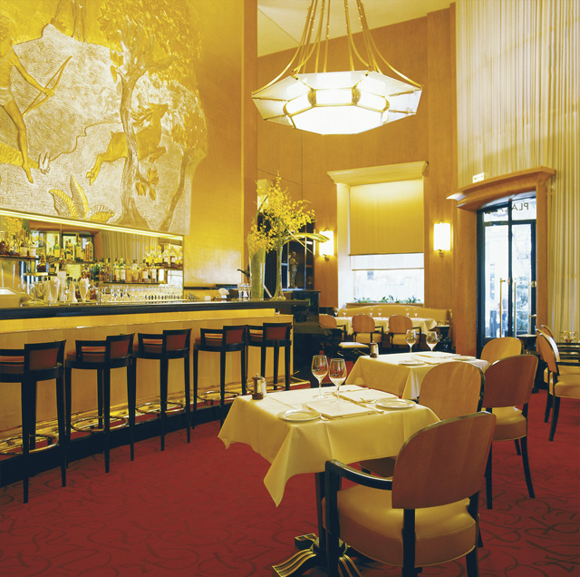
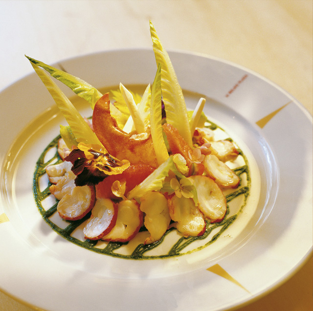

Кто не видел Relais Plaza, тот не видел Париж. Начиная с 1936 г., представить себе Париж без Relais Plaza так же невозможно, как без Сены или Эйфелевой башни. Это заведение, в популярности которого ничего не изменилось за десятилетия и которое «Фигаро» назвала «самым парижским рестораном» города. Чем это можно объяснить? Может быть, оригинальностью обстановки в стиле Ар Деко, напоминающей знаменитый когда-то лайнер «Нормандия», в которой чувствуешь себя как в кинодекорациях? Или опытом гостеприимства, который в течение 30 лет накоплен метрдотелем Вернером Кюхлером и его великолепно обученной командой? Или художественным флером? Потому что он удивляет не только подлинными произведениями искусства. Джазовые вечера, проходящие в последние среды месяца, во время которых Вернер Кюхлер сам берется за микрофон, уже давно стали легендарными. И последняя в этом списке, но не последняя по значению выдающаяся кухня, за концепцию которой отвечает никто иной, как знаменитый Алан Дюкасс. Пожалуй, именно она приближает к разгадке феномена Relais Plaza. В кухню шеф-повара Филиппа Марка доставляются только абсолютно лучшие продукты, из которых готовятся кулинарные шедевры. Особенно любимы гостями, среди которых сегодня, как и раньше, множество знаменитостей, блюда, которые сервируются у стола, такие как, стейк тартар или бресская курочка с вертела.


{kind=link}
{kind=link}